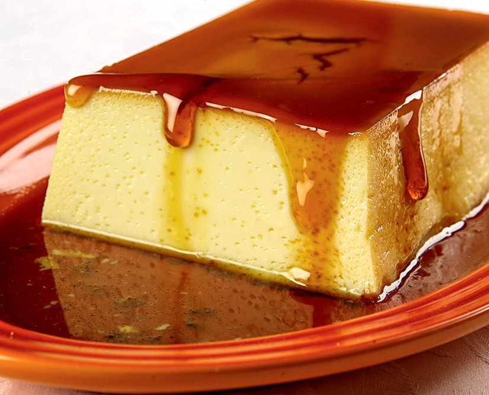

Pudim de Leite em Pó
Ingredientes:
- 2 xícaras (chá) de leite em pó
- 2 1/2 xícaras (chá) de água
- 1 colher (sopa) de margarina
- 2 xícaras (chá) de açúcar
- 6 ovos
Modo de preparo
Ponha no liquidificador o leite, a água, a margarina e o açúcar.
Bata até ficar cremoso. Desligue e junte os ovos. Bata mais um pouco.
Despeje numa forma de pudim com caramelo e raspas de casca de limão.
Leve ao forno, preaquecido, em banho-maria até assar e firmar.
Deixe esfriar e ponha na geladeira por duas horas. Desenforme e sirva.